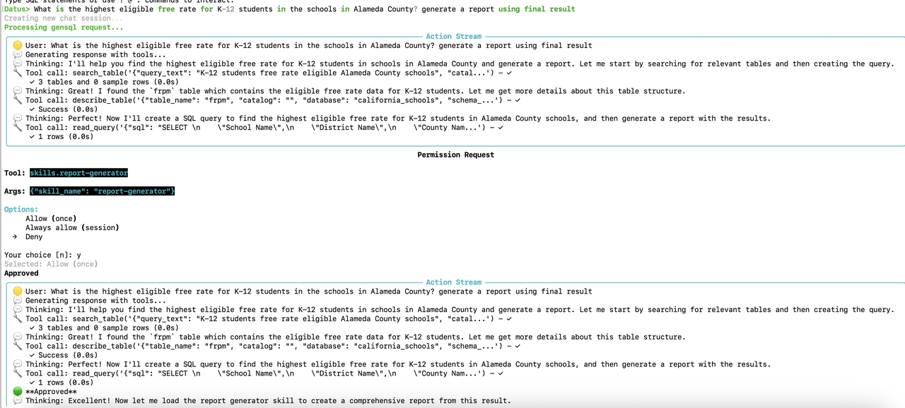
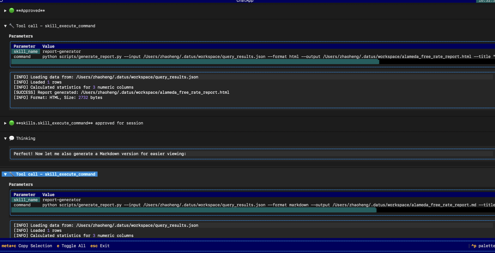
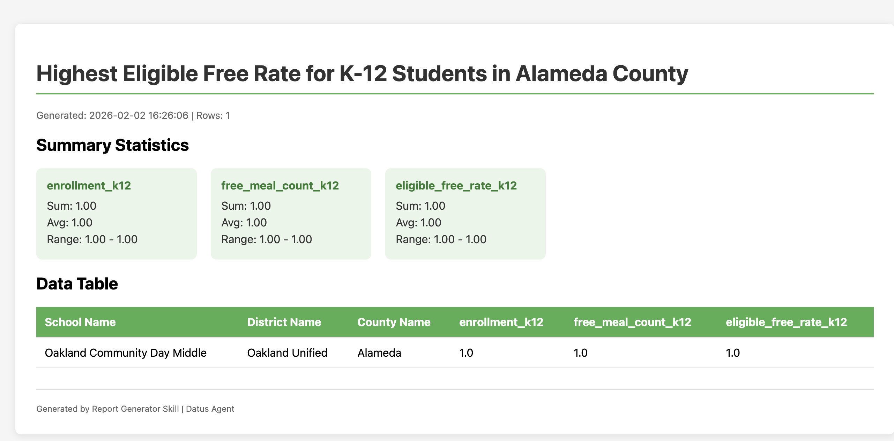

Skills¶
Skills is a skill discovery and loading system for Datus-agent, following the agentskills.io specification. It enables modular, on-demand capability expansion through SKILL.md files.
Quick Start¶
This tutorial demonstrates how to use the report-generator skill with the California Schools dataset to generate analysis reports.
Step 1: Create a Skill¶
Create a skill directory with a SKILL.md file:
~/.datus/skills/
└── report-generator/
├── SKILL.md
└── scripts/
├── generate_report.py
├── analyze_data.py
├── validate.sh
└── export.sh
SKILL.md content:
---
name: report-generator
description: Generate analysis reports from SQL query results with multiple output formats (HTML, Markdown, JSON)
tags: [report, analysis, visualization, export]
version: "1.0.0"
allowed_commands:
- "python:scripts/*.py"
- "sh:scripts/*.sh"
---
# Report Generator Skill
This skill generates professional analysis reports from SQL query results.
## Features
- **Multiple Formats**: Export to HTML, Markdown, or JSON
- **Data Analysis**: Automatic statistical analysis and insights
## Usage
### Generate a Report
python scripts/generate_report.py --input results.json --format html --output report.html
Options:
- `--input`: Input data file (JSON or CSV)
- `--format`: Output format (html, markdown, json)
- `--output`: Output file path
- `--title`: Report title (optional)
Step 2: Configure Skills in agent.yml¶
skills:
directories:
- ~/.datus/skills
- ./skills
warn_duplicates: true
permissions:
default: allow
rules:
# Require confirmation for skill loading
- tool: skills
pattern: "*"
permission: ask
# Require confirmation for skill script execution
- tool: skill_bash
pattern: "*"
permission: ask
Tip
Using ask permission for skills and skill_bash requires manual confirmation before execution, which helps prevent accidental or dangerous operations.
Step 3: Use the Skill in a Chat Session¶
Start a chat session and ask your question:
> What is the highest eligible free rate for K-12 students in the schools
> in Alameda County? Generate a report using the final result.
The agent will:
-
Load the skill - When generating a report is needed, the LLM calls
load_skill(skill_name="report-generator")to get the skill instructions. -
Execute SQL query - Query the California Schools database to find the answer.
-
Generate report - Execute the skill's script to create a report:


Step 4: View the Generated Report¶
The report will be generated in the skill's working directory:

Permission System¶
The permission system controls which skills and tools are available to the agent.
Permission Levels¶
| Level | Behavior |
|---|---|
allow |
Skill is available and can be used freely |
deny |
Skill is hidden from agent (never appears in prompts) |
ask |
User confirmation required before each use |
Configuration Example¶
permissions:
default: allow
rules:
# Allow all skills by default
- tool: skills
pattern: "*"
permission: allow
# Require confirmation for database write operations
- tool: db_tools
pattern: "execute_sql"
permission: ask
# Hide internal/admin skills
- tool: skills
pattern: "internal-*"
permission: deny
# Require confirmation for potentially dangerous skills
- tool: skills
pattern: "dangerous-*"
permission: ask
Pattern Matching¶
Patterns use glob-style matching:
*matches anythingreport-*matches skills starting with "report-"*-adminmatches skills ending with "-admin"
Node-Specific Permissions¶
Override permissions for specific nodes:
agentic_nodes:
chat:
skills: "report-*, data-*" # Only expose matching skills
permissions:
rules:
- tool: skills
pattern: "admin-*"
permission: deny
Using Skills in Subagents¶
By default, the chat subagent loads all discovered skills automatically. Other subagents (report generation, SQL generation, metrics, etc.) do not load any skills unless explicitly configured in agent.yml.
| Subagent Type | Skills Loaded by Default |
|---|---|
| Chat | All discovered skills |
| All other subagents (report, SQL, metrics, etc.) | None |
Enabling Skills for Customized Subagents¶
Each subagent in agentic_nodes supports three types of tool extensions that can be mixed together:
| Field | Source | Description |
|---|---|---|
tools |
Built-in | Datus native tools (e.g. db_tools.*, context_search_tools.*, date_parsing_tools.*) |
mcp |
Third-party | External MCP server tools, configured via .mcp.json (e.g. metricflow_mcp, filesystem) |
skills |
User-defined | Skills discovered from SKILL.md files — can define workflows in Markdown and extend with custom scripts |
To enable skills in a customized subagent, add the skills field under the subagent's config in agentic_nodes section of agent.yml:
agentic_nodes:
# Mixing tools + mcp + skills in a single subagent
school_report:
node_class: gen_report
tools: db_tools.*, context_search_tools.*
mcp: metricflow_mcp
skills: "report-*, data-*"
model: deepseek
# SQL subagent with only native tools and SQL skills
school_sql:
tools: db_tools.*, date_parsing_tools.*
skills: "sql-*"
model: deepseek
# Chat subagent with all skills
school_chat:
tools: db_tools.*, context_search_tools.*
skills: "*"
model: deepseek
The skills field accepts a comma-separated list of glob patterns. Only skills whose names match at least one pattern will be available to that subagent. The node_class field supports two values: gen_sql (default) and gen_report.
When a subagent has skills configured:
- Skill discovery — The system scans
skills.directories(or defaults:~/.datus/skills,./skills) to find allSKILL.mdfiles. - Pattern filtering — Only skills matching the subagent's
skillsglob patterns are exposed. - Permission filtering — The
permissionsrules further filter which skills are allowed, denied, or require confirmation. - System prompt injection — Available skills are appended as
<available_skills>XML to the subagent's system prompt, enabling the LLM to callload_skill()andskill_execute_command().
Example: Enable Report Generation Skill in a Subagent
skills:
directories:
- ~/.datus/skills
agentic_nodes:
attribution_report:
node_class: gen_report
tools: db_tools.*
skills: "report-generator"
model: deepseek
With this configuration, the attribution_report subagent will have access to built-in database tools and the report-generator skill. The LLM can call load_skill(skill_name="report-generator") to get instructions, then use skill_execute_command() to run scripts defined in the skill.
Note
If no global skills: section is present in agent.yml, the system automatically creates a default skill manager that scans ~/.datus/skills and ./skills.
Tip
The skill_execute_command tool defaults to ask permission level. This means the user will be prompted for confirmation before any skill script executes, unless explicitly overridden in the permissions config.
Running Skills in Isolated Subagent¶
Skills can also be configured to run in an isolated subagent context by setting context: fork in the SKILL.md frontmatter:
---
name: deep-analysis
description: Perform comprehensive data analysis with multiple iterations
tags: [analysis, research]
context: fork
agent: Explore
---
# Deep Analysis Skill
This skill runs in an isolated Explore subagent for thorough investigation.
Available subagent types for isolated execution:
| Agent Type | Use Case |
|---|---|
Explore |
Codebase exploration, file searching, understanding structure |
Plan |
Implementation planning, architectural decisions |
general-purpose |
Multi-step tasks, complex research |
Invocation Control¶
| Field | Default | Description |
|---|---|---|
disable_model_invocation |
false |
If true, only user can invoke via /skill-name |
user_invocable |
true |
If false, hidden from CLI menu (only model invokes) |
SKILL.md Reference¶
Frontmatter Fields¶
| Field | Required | Description |
|---|---|---|
name |
Yes | Unique skill identifier |
description |
Yes | Brief description shown in available skills list |
tags |
No | List of tags for categorization |
version |
No | Semantic version string |
allowed_commands |
No | List of permitted script patterns |
context |
No | Set to "fork" to run in subagent |
agent |
No | Subagent type: Explore, Plan, general-purpose |
disable_model_invocation |
No | If true, only user can invoke |
user_invocable |
No | If false, hidden from CLI menu |
Command Pattern Format¶
Examples:
- python:* - Allow any python command
- python:scripts/*.py - Allow scripts in scripts/ directory only
- sh:*.sh - Allow shell scripts
- python:-c:* - Allow python -c inline code
Security Features¶
- Commands only execute if they match allowed patterns
- Working directory locked to skill location
- Timeout enforcement (default: 60 seconds)
- Environment variables:
SKILL_NAME,SKILL_DIR
Troubleshooting¶
Skill Not Discovered¶
- Check skill directory is in
skills.directoriesconfig - Verify SKILL.md has valid YAML frontmatter (between
---markers) - Both
nameanddescriptionfields are required
Script Execution Denied¶
- Verify command matches an
allowed_commandspattern - Ensure skill was loaded first via
load_skill() - Check pattern format:
prefix:glob_pattern
Debug Logging¶
Enable debug logging:
Skill Marketplace CLI¶
Datus includes a built-in CLI for interacting with the AgenticDataStack Town Skills Marketplace. You can search, install, publish, and manage skills directly from the command line.
Authentication¶
The Town Marketplace requires authentication for all API operations. Use the login command to authenticate before using marketplace features.
# Interactive login (prompts for email and password)
datus skill login --marketplace http://datus-marketplace:9000
# Non-interactive login
datus skill login --marketplace http://datus-marketplace:9000 --email user@example.com --password secret
# Logout (clear saved token)
datus skill logout --marketplace http://datus-marketplace:9000
In the REPL:
datus> /skill login http://datus-marketplace:9000
Email: user@example.com
Password: ****
Login successful! Token saved for http://datus-marketplace:9000
Tokens are saved at ~/.datus/marketplace_auth.json and automatically included in all subsequent marketplace requests. Tokens expire after 24 hours; re-run login to refresh.
Configuration¶
Marketplace settings in agent.yml:
skills:
directories:
- ~/.datus/skills
- ./skills
marketplace_url: "http://localhost:9000" # Town backend URL
auto_sync: false # Auto-sync promoted skills on startup
install_dir: "~/.datus/skills" # Where marketplace skills are installed
Or override the marketplace URL per-command with --marketplace:
Command Reference¶
datus skill list¶
List all locally installed skills.
Output:
┌──────────────────┬─────────┬─────────────┬─────────────────────────┐
│ Name │ Version │ Source │ Tags │
├──────────────────┼─────────┼─────────────┼─────────────────────────┤
│ sql-optimization │ 1.0.0 │ marketplace │ sql, optimization │
│ report-generator │ 1.0.0 │ local │ report, analysis │
└──────────────────┴─────────┴─────────────┴─────────────────────────┘
datus skill search <query>¶
Search for skills in the Town Marketplace.
datus skill search sql
datus skill search optimization
datus skill search --marketplace http://localhost:9000 report
Output:
Searching for 'sql'...
sql-optimization v1.0.0 — Optimize SQL queries for better performance
sql-linting v0.3.0 — Lint SQL queries against best practices
datus skill install <name> [version]¶
Install a skill from the Marketplace to your local install_dir.
# Install latest version
datus skill install sql-optimization
# Install specific version
datus skill install sql-optimization 1.0.0
What happens:
- Downloads the skill bundle (
.tar.gz) from Town Backend - Extracts to
~/.datus/skills/<name>/ - Registers the skill with
source=marketplacein the local registry
datus skill publish <path> [--owner <name>]¶
Publish a local skill directory to the Town Marketplace.
# Publish from a skill directory (must contain SKILL.md)
datus skill publish ./skills/sql-optimization
# Publish with owner
datus skill publish ./skills/sql-optimization --owner "murphy"
# Publish to a specific marketplace
datus skill publish ./skills/sql-optimization --marketplace http://datus-marketplace:9000
Requirements:
- The directory must contain a valid
SKILL.mdwith YAML frontmatter - Required frontmatter fields:
name,description - Recommended fields:
version,tags,allowed_commands,license
Example SKILL.md:
---
name: sql-optimization
description: Optimize SQL queries for better performance
tags: [sql, optimization, performance]
version: "1.0.0"
license: Apache-2.0
compatibility:
datus: ">=0.2.0"
allowed_commands:
- "python:scripts/*.py"
- "sh:scripts/*.sh"
---
# SQL Optimization Skill
...
What happens:
- Reads and validates
SKILL.mdfrontmatter - Creates a
.tar.gzbundle of the skill directory - POSTs skill metadata to
POST /api/skills - Uploads the bundle to
POST /api/skills/<name>/<version>/upload - Skill appears in the Town Marketplace UI at
/skills
datus skill info <name>¶
Show details about a skill (checks both local and marketplace).
Output:
Local: sql-optimization v1.0.0 (marketplace)
Optimize SQL queries for better performance
Marketplace: sql-optimization v1.0.0
Owner: murphy Promoted: True
datus skill update¶
Update all marketplace-installed skills to the latest version.
This checks each marketplace-installed skill and re-downloads if a newer version is available.
datus skill remove <name>¶
Remove a locally installed skill from the registry.
REPL Commands¶
The same skill operations are available inside the interactive REPL session:
datus> /skill list # List local skills
datus> /skill search sql # Search marketplace
datus> /skill install sql-optimization # Install from marketplace
datus> /skill publish ./skills/my-skill # Publish to marketplace
datus> /skill info sql-optimization # Show skill details
datus> /skill update # Update marketplace skills
datus> /skill remove sql-optimization # Remove local skill
End-to-End Workflow Example¶
# 1. Create a skill locally
mkdir -p ./skills/my-etl-helper/scripts
cat > ./skills/my-etl-helper/SKILL.md << 'EOF'
---
name: my-etl-helper
description: Helper utilities for ETL pipeline development
tags: [etl, pipeline, data-engineering]
version: "1.0.0"
allowed_commands:
- "python:scripts/*.py"
---
# ETL Helper Skill
Provides utilities for building and testing ETL pipelines.
EOF
# 2. Publish to marketplace
datus skill publish ./skills/my-etl-helper --owner murphy
# 3. Verify it appears in marketplace
datus skill search etl
# 4. Install on another machine / agent
datus skill install my-etl-helper
# 5. Verify local installation
datus skill list
# 6. View in Town UI
open http://localhost:3000/skills
Town Marketplace UI¶
After publishing, skills are visible in the Town Frontend:
- Skills List (
/skills): Browse all skills with search and tag filtering - Skill Detail (
/skills/<name>): View version history, metadata, promote/delete - Publish Form: Publish new skills directly from the web UI
- Promote: Mark a skill as "Town Default" so all agents auto-install it